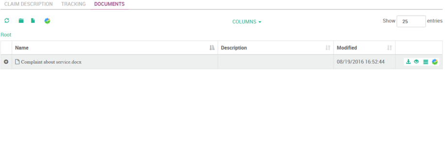

Alfodoo¶
Alfodoo is a set of addons to seamlessly integrate an external Document Management System with Odoo.
Alfodoo provides a new kind of field CmisFolder and its powerful widget FieldCmisFolder. Alfodoo is a set of addons to display and manage content from a CMIS container linked to an Odoo model.
The Odoo widget has a modular and generic core providing functionality based on the CMIS V1.1 protocol. This core can be extended by additional modules in order to propose additional features or customizations proper to a specific CMIS container. At this stage, the existing customization is for the Alfresco Document Management System.
With these addons, you are now able to enrich the user’s experience and provide in Odoo great features that enable the users to easily store and manage their documents in an external Document Management System through a seamless integration.
Key Features¶
- Easy to create Alfresco space folders for any Odoo business object
- Drag&Drop of content (office document, image, mail, ….) in Alfresco from Odoo. Your content is immediately filed in the right location
- Update your document (versioning) without leaving Odoo
- Easy content preview and browsing (PDF, Image, Media preview)
- Easy connector configuration – Everything can be done directly from the Odoo interface
In addition to these features, extensions can be implemented to add more advanced functionality such as:
- Space template: possibility to create a dedicated structured space template linked to a type of Odoo object (project, …).
- Reporting: from an Odoo object, possibility to generate any kind of reports in most common formats (PDF, MS office, ..). The generated document is automatically classified in the appropriate folder and enriched with appropriate metadata
- Proxy mode: with this mode, instead of using the actual user credentials for submitting Odoo widget requests (CMIS) to Alfresco, a proxy user is used.
Alfodoo is 100% Open Source (AGPL version 3): the full source code is available on GitHub
- Full responsive HTML Widget that enables you to view and manage content from a
- cmis:folder.
See a How to link a CMIS documents folder to an Odoo model with examples of code
Support Alfodoo development¶
Alfodoo is open source, there are many ways to Contribute in different areas (eg testing, documentation, reporting issues, fixing bugs).
The development of Alfodoo has been funded by ACSONE SA/NV.
You can also donate to support the continued development of Alfodoo. Collected funds will be dedicated to the improvement of Alfodoo (support of new Odoo and Alfresco versions development of new features).
Overview: Manage the documents in Odoo¶
The main part of the functionality is accessed through a “Documents” tab configurable on each Odoo model providing a “real-time” view on the Alfresco content.
The “Documents” tab gives direct access to the items (documents list, sub-folders, …) linked to the Odoo object. The items are stored in the related Alfresco folder.
First the user triggers the creation (button “Create folder in DMS”) of the related Alfresco folder.

Then the following functionality becomes available:
| Refresh content table: This option refreshes the folder content | |
| Create folder: A (sub-)folder is created in the current folder. The user gives a name for the folder and selects "Create" | |
| Create document: Upload a document in the current folder. The user selects a file and clicks on "Create" to upload the document | |
| Show in Alfresco: This option opens Alfresco Share and shows the folder details page |
In the content table, the user can see the documents and folders list.
The following information is displayed for each item:
- The item name
- The item description
- Last Modification date
- An icon used to hide or unhide the item details (folder or document Alfresco metadata: cm:folder, cm:content, cm:title)
- A contextual menu: the options list for a folder item or for a document item
For a “Document” item, the following options are available:
| Download: Download the document | ||
| Preview: Preview the document | ||
| More actions: | ||
| View details: this option shows some documents metadata (Alfresco cm:content). | ||
| Update: with this option the user can upload a new document in the folder. In case the document is associated with the Alfresco versionnable aspect Alfresco, the document version number (major) is automatically incremented. | ||
| Delete: delete the document. | ||
| Show in Alfresco: This option opens Alfresco share and shows the document details page. | ||
Project¶
The Alfodoo project has the objective to provide a collection of ‘addons’ in order to integrate the odoo platform with a Document Management System supporting the CMIS V1.1 protocol.
Currently, the project proposes an integration between Odoo and the open-source ECM platform Alfresco.
The aim is to offer Odoo users a transparent and easy access to the documents stored in the appropriate location in Alfresco.